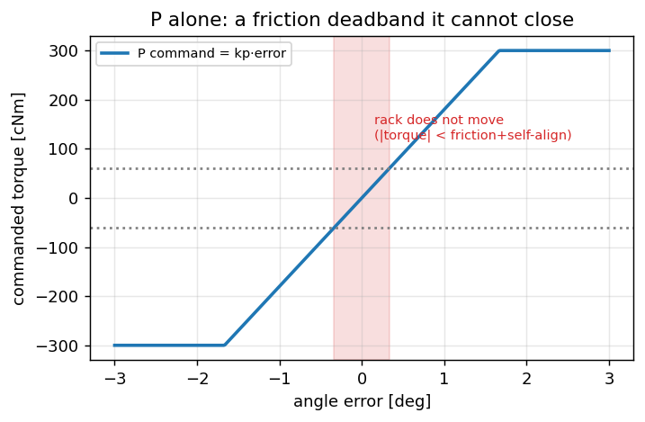
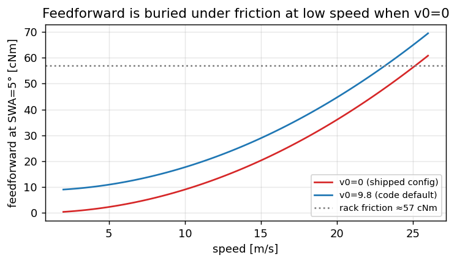

Angle control — the loop where feedback actually ends#
Every chapter so far produced a desired trajectory: a curvature from the planner, a wheel angle from the vehicle model. This chapter is about the last loop — the one that has to make a physical steering rack agree, through the only lever the car offers: assist torque, ±300 cNm, rate-limited by the panda. It is also where three of this project’s measured surprises live: torque saturates against friction long before the tyres matter, the integrator winds up against a limiter it cannot see, and the feedforward that was supposed to help contributes single-digit cNm out of 300.
The chain, with owners and rates:

Fig. 23 Planner → vehicle model → angle PID → platform → EPS, each stage at its own rate.#
Planner (vision rate, ~24 Hz) κ* → vehicle model → δ
Control (chassis rate, ~100 Hz) δ × steer_ratio × steer_sign + learned zero → SWA setpoint
angle PID (this chapter) → steer_norm ∈ [−1, 1] → × 300 cNm
Platform (HCA rate, 50 Hz) panda rate limiter (+4 / −10 cNm per frame) → HCA_01 → EPS
Code: lateral/angle_control.h (setpoint, learned zero, slew), utils/lat_control_pid.h (the PID
itself), services/control.cpp (torque = lround(steer_norm * max_torque_cnm)),
platform/volkswagen/values.h (the panda constants). Torque here is in cNm (centinewton-metres,
hundredths of a N·m); the panda ceiling of ±300 cNm is ±3 N·m of assist at the column.
If you have not met a PID
A PID turns an error (setpoint minus measurement — here the steering-angle error) into a command (torque) by summing three terms: P proportional to the error now, I the integral of past error (it eats steady offsets a P term leaves behind), F a feedforward computed from the target directly rather than from the error. “Anti-windup” is the rule that stops I from accumulating while the output is already maxed out and cannot act — the failure this chapter measures is exactly that rule looking at the wrong limit.
Build the rack#
The plant this loop fights is not the car — it is the rack: dry friction plus the self-aligning
torque that grows with speed and angle. Comma’s learned frictionCoefficientRaw = 0.192 for this
platform is about 57 cNm of stiction; the toy uses that number:
import math
import numpy as np
DT = 0.01 # chassis-rate tick [s], ~100 Hz like the real inner loop
T_MAX = 300.0 # panda ceiling [cNm]
T_FRICTION = 57.0 # rack stiction [cNm] — comma's learned 0.192, in torque units
C_SAT = 0.0167 # self-aligning torque [cNm per deg per (m/s)^2]
K_RACK = 0.15 # rack speed [deg/s per net cNm]
def rack_step(swa_deg, torque_cnm, v_mps, dt=DT):
"""One tick of the toy rack: torque in, steering-wheel angle out."""
t_sat = C_SAT * v_mps * v_mps * swa_deg # the road pushing the wheel straight
net = torque_cnm - t_sat
if abs(net) <= T_FRICTION:
return swa_deg # stiction: nothing moves
return swa_deg + K_RACK * (net - math.copysign(T_FRICTION, net)) * dt
Two honest omissions: no inertia (the rack is heavily geared) and no driver. Both matter less than friction, which is the point of the build.
P alone: the friction deadband#
The shipped proportional gain, converted to torque units, is about 180 cNm per degree of angle error
(pid_kp = 0.6 on a normalised scale where ±1 is ±300 cNm and the error is normalised by the angle
that pins the output — measured on this stack, P alone rails at 1.67° of error):
KP_T = 180.0 # cNm per degree of angle error
def drive_to(target_deg, controller, v=15.0, t_end=6.0):
"""Track a setpoint; return the trajectory of (swa, torque)."""
swa, log = 0.0, []
state = {}
for _ in range(int(t_end / DT)):
torque = controller(target_deg - swa, state)
torque = float(np.clip(torque, -T_MAX, T_MAX))
swa = rack_step(swa, torque, v)
log.append((swa, torque))
return np.array(log)
p_only = lambda err, st: KP_T * err
log = drive_to(5.0, p_only)
standing = 5.0 - log[-1, 0]
t_sat_5 = C_SAT * 15.0**2 * 5.0
predicted = (t_sat_5 + T_FRICTION) / KP_T
print(f"P only: standing error {standing:.2f}°, predicted (T_sat + friction)/kp = {predicted:.2f}°")
assert 0.25 < standing < 0.6, "P alone must stall on friction: a standing error it can never close"
P stalls exactly where its torque no longer beats stiction plus self-alignment: the error freezes at \((T_{\mathrm{sat}} + T_{\mathrm{fric}})/k_p\). Below that, 2° of error and 0.4° of error command the same nothing. No gain fixes this — raising \(k_p\) shrinks the deadband and amplifies every quantised CAN tick of measured SWA instead.
{kind=link}

Fig. 24 The P command is proportional to the error, but below the friction-plus-self-align torque the rack does not move at all — a deadband no gain closes.#
I: one integrator, two clamps — and it only knows about one#
The integrator eats the friction offset. But it lives between two clamps, and the shipped
anti-windup logic (lat_control_pid.h) watches only the first:
the output clamp ±1 (±300 cNm) — integration is skipped when the trial output would exceed it;
the panda rate limiter — magnitude may rise only 4 cNm per 20 ms frame (200 cNm/s) and fall 10 (500 cNm/s). The PID does not see it: its output is not at the clamp while the applied torque crawls, so the integral winds against an error that physically cannot be closed yet.
Build the limiter and measure the blind spot:
def panda_limit(applied, wanted, dt=DT):
"""MQB HCA rate limit: magnitude up 4 cNm / 20 ms, down 10 cNm / 20 ms."""
up, down = 4.0 * dt / 0.02, 10.0 * dt / 0.02
if wanted * applied < 0 or abs(wanted) < abs(applied):
step = down
else:
step = up
if wanted > applied:
return min(applied + step, wanted)
return max(applied - step, wanted)
def pi(err, st, ki_t=36.0, freeze=False):
if not freeze:
st["i"] = st.get("i", 0.0) + ki_t * err * DT
return KP_T * err + st.get("i", 0.0)
def reversal(freeze_while_limited):
"""Settle at +2°, then command −2°; return overshoot past the new target [deg]."""
swa, applied, st = 0.0, 0.0, {}
worst = 0.0
for k in range(int(10.0 / DT)):
target = 2.0 if k * DT < 4.0 else -2.0
# What the PID would output right now, clamped to the ceiling:
raw = float(np.clip(KP_T * (target - swa) + st.get("i", 0.0), -T_MAX, T_MAX))
# The rack is still crawling toward it if the applied torque is far from that (rate-limited):
rate_limited = abs(applied - raw) > 20.0
freeze = freeze_while_limited and rate_limited
wanted = float(np.clip(pi(target - swa, st, freeze=freeze), -T_MAX, T_MAX))
applied = panda_limit(applied, wanted)
swa = rack_step(swa, applied, 15.0)
if k * DT >= 4.0 and swa < -2.0:
worst = max(worst, -2.0 - swa)
return worst
over_blind = reversal(freeze_while_limited=False)
over_aware = reversal(freeze_while_limited=True)
print(f"overshoot past the new setpoint: integrator blind to the limiter {over_blind:.2f}°, "
f"frozen while rate-limited {over_aware:.2f}°")
assert over_blind > over_aware + 0.1, "winding against the rate limiter must cost visible overshoot"
This blind spot is not hypothetical: upstream openpilot passes freeze_integrator = steer_limited into
the same PID, and our port carries the parameter in the signature without passing it — the applied
torque crawls at 200 cNm/s after a reversal while the integral quietly charges. Same shape as the toy,
measured on road bags in docs/LATERAL_CHAIN_RU.md.
F: the feedforward that barely participates#
{kind=link}

Fig. 25 With the shipped v0 = 0 the feedforward stays under the rack’s own friction until highway speed; the
9.8 m/s floor lifts it into the useful range.#
The feedforward is \(k_f \cdot \mathrm{SWA} \cdot (v^2 + v_0^2)\) — torque you will need even at zero error, from the self-aligning physics. Its shipped size, in the units that matter:
KF = 6e-5 # shipped lat_pid_kf, on the normalised scale
def ff_cnm(swa_deg, v, v0=0.0):
return KF * swa_deg * (v * v + v0 * v0) * T_MAX
print(f"{'v, m/s':>7} | {'ff at SWA=5°, v0=0':>19} | {'v0=9.8':>7} | friction")
for v in (6.0, 12.0, 23.0):
print(f"{v:>7.0f} | {ff_cnm(5.0, v):>19.1f} | {ff_cnm(5.0, v, 9.8):>7.1f} | {T_FRICTION:.0f} cNm")
assert ff_cnm(5.0, 6.0) < T_FRICTION / 3, "at city speed the feedforward is buried under friction"
Two facts to hold together. First, below ~10 m/s the term is a rounding error next to the 57 cNm of
friction it would need to beat — which is why the speed floor \(v_0\) exists (code default 9.8 m/s).
Second, the shipped config sets lat_pid_ff_floor_mps: 0.0: on the 2026-08-21 drive the implied
\(k_f\) recovered from the bag’s pid_f was 5.63e-5 against the configured 6e-5 — the arithmetic of a
zero floor — and the measured contribution was 1.3 / 3.2 / 4.3 cNm across the speed bins, out of 300.
The correction exists in code and is off in the field; docs/CONTROLLER_LIMITS.md carries the
measurement.
Override: unwind, don’t freeze#
When the driver holds the wheel (steering_pressed, 80 cNm allowance on the panda side), the
integrator is not frozen — it is unwound at 0.3/rate per tick, gone in about three seconds.
Frozen state would hand back the pre-override torque the instant the driver lets go, on a road that has
since curved; unwinding hands back a loop that re-learns from zero. The asymmetry is deliberate and
cheap to see in the toy: freeze st["i"] during a simulated override and watch the release transient.
What the learner changes here#
paramsd feeds three numbers into this loop (setLearnedParams): tyre stiffness (used one level
up, κ→δ), the steer ratio, and the angle zero — the learned offset added to every setpoint
(setSetpointFromSteer). The zero matters most day-to-day: a phone remount or a wheel-alignment drift
shows up as a constant steering bias that the integrator would otherwise absorb slowly on every single
engagement. The effective* accessors in angle_control.h tell you which source is in force.
Reading it in a bag#
Everything above is logged per tick in control/lane_keep_debug: desired_swa_deg, actual_swa_deg,
angle_error_deg, torque_cnm and the split pid_p / pid_i / pid_f. torque_saturated is set at
99 % of the ceiling and, held for a second, becomes the on-screen STEERING LIMIT alert. The single
most useful sanity plot is pid_i against time: it should breathe with corners, not ratchet.
Acceptance#
the P deadband reproduces and matches \((T_{\mathrm{sat}}+T_{\mathrm{fric}})/k_p\);
the reversal experiment shows measurably larger overshoot when the integrator is blind to the rate limiter — you can now state the shipped
freeze_integratorgap in one sentence;the feedforward table explains, with the bag-measured 1.3–4.3 cNm, why arcs saturate at 300 cNm while
pid_fstays single-digit.
For depth#
Vehicle model — the κ→δ conversion feeding this loop, and \(G(v)\).
MPC and fp — where the setpoint comes from, and the delay compensation upstream.
docs/LATERAL_CHAIN_RU.md— the full chain audit this chapter compresses, with the road numbers.
Next: Platform